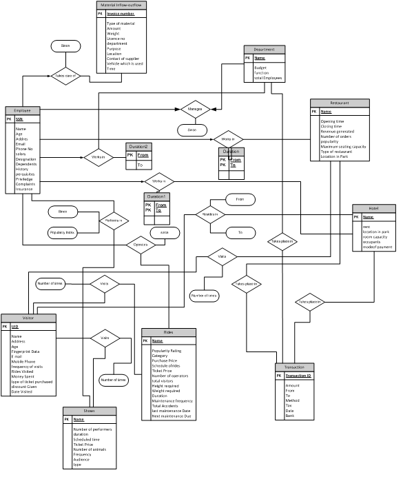

Electronics freak, hardware tinkerer, movie buff, android lover and blogger
Adventure Park Management System
Adventure Park Management System is a Database Management System which is implemented using MySQL. We visualized a adventure park such as Disneyland and made a database related to this senario. The project period was of 3 months and hence all the detailed practices of DBMS were followed.
The database was divided into diffrent sections namely:
1. Visitor Data
2. Employees and staff data
3. Rides and Attraction data
4. Maintenance data
5. Expenditure and revenue data
6. Hospitality data
7. Different departments data such as finance, human resource, infrastructure,
etc.
We made more than 35 tables for the same having numerous data and wrote queries for most of the requirement. We also did normalization of the data.
The front-end was implemented in Java. The front-end was connected to back-end using JDBC. We used Oracle for storing our database.
The ER Diagram of our project is given below:
